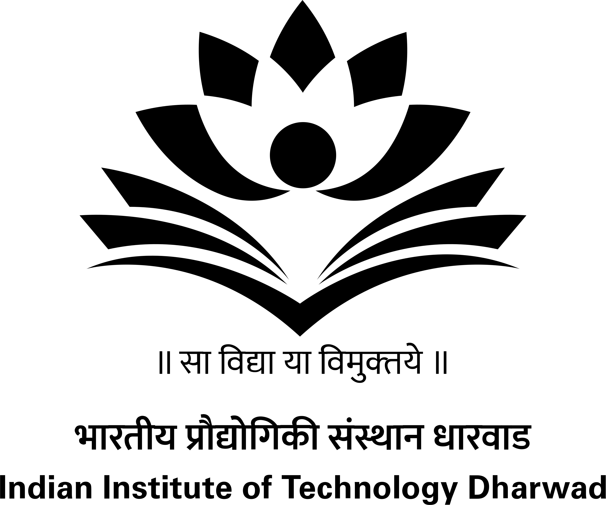
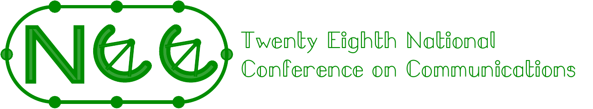
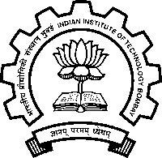

|
 |
 |
 |  |
 |
Financial Sponsors
Technical Co-Sponsors

Welcome to NCC 2022
The twenty-eighth edition of the National Conference on Communication (NCC-2022) returns to the Bombay region after a gap of seven years. We are glad to announce a consortium of IITs which are co-hosting the event (Indore, Dharwad, Gandhinagar, Goa and Bombay). Please mark the dates May 24- May 27, 2022. The presentations this time will take place in the VIRTUAL mode (online). Technical co-sponsorship from various professional bodies is under process, and the proceedings are expected to appear in traditional hosting platforms. Several distinguished plenary talks, along with co-located symposia, tutorials and other invited talks are planned for technical program.
The conference invites papers, primarily in the three tracks of communication, signal processing and networking. Please download the call for papers for more information. (Submission Deadline: 11 February 2022)
Warm Regards
General Chairs, NCC 2022
(Sharayu Moharir, Prasanna Chaporkar)
Electrical Engineering
IIT Bombay
India 400076
Important dates
| Manuscript submission: | Deadline 11 February 2022 (23:59:00 IST) |
| Acceptance notification by: | 11 April 2022 |
| Camera-ready paper due: | 24 April 2022 |
| Technical Co-sponsors | ||